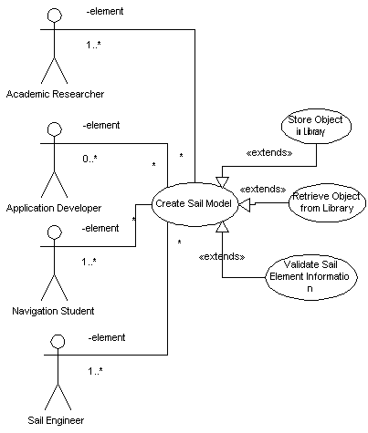

|
|
SailAway Project |
| Diagram |  |
|---|---|
| Name | Create a Sail Model |
| Iteration | Finished |
| Summary | A user records into the system details about a sail model. These details will add up to enough information for the system to treat the model as a real physical object that obeys real physics laws. Information that makes up a sail model includes detail about the mass, shape, locations, and System Level Context contraints on every portion of the sail. The system receives all input and validates it against templates. Acceptable information is then added to the sail model and saved. The system informs the user when the sail model is complete enough to be considered well formed for the purpose of using it in a simulation. |
| Basic Course of Events |
|
| Alternative Paths |
If the system is configured to use any library at step 4, it will store the
sail model in a library with related information.
If the system is configured to use a library at step 1, it will present the user with the option to load a pre-existing model to act as a starting point for further additions or deletions to the model. If multiple libraries are available, the storage and retrievals use cases will make the decisions regarding which ones to use. |
| Exception Paths | At step 3, invalid elements are brought to the attention of the user via the Notification Tool and not saved within a sail model. |
| Extension Points |
When the System records elements from a sail model, these elements are
passed through a validator. This occurs at step 3.
When the System records a sail model in a library at step 4, it will use a separate process to do the actual saving due to the complexity of the interaction between the System and a remote library and the fact that the separate process can be re-used by other sections of the system. When the System retrieves a sail model from a library at step 1, it will use a separate process to do the actual getting due to the complexity of the interaction between the System and a remote library and the fact that the separate process can be re-used by other sections of the system. |
| Trigger | The user triggers this case when they present information to the System that results in a new or altered Sail Model. |
| Assumptions | . |
| Preconditions |
|
| Postconditions | Every time the System leaves this case, any stored sail model is valid. It is not necessarily true that the sail models are complete, though. |
| Related Environment Rules | 1 |
| Author | Dr Alfred W Differ |
| Date |
2001/11/07 - Facade 2002/01/04 - Filled 2002/02/03 - Focused 2002/02/15 - Finished |